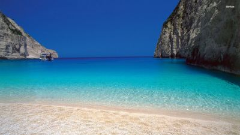

Изо всех видов путешествий летний отдых на море по праву занимает место самого популярного. И в первую очередь с удовольствием нежатся на пляже и плещутся в теплой морской воде семьи с детьми. В выборе места проведения отпуска мало кому повезло так, как поклонникам пляжного отдыха - им предлагается внушительный список стран и курортов с очень жарким или просто ласковым солнцем, белым, чёрным и красным песком, галькой покрупнее или помльче. Как бы ни любили иные из нас прохладные залы музеев или круговерть шопинг-прогулок, бывает так, что в драгоценные две отпускные недели ну совсем ничего не хочется делать, только лениво перемещаться по маршруту гостиничный номер — пляж — ресторан. Число солнцепоклонников в нашей стране так велико, что в туристических запросах пляжные направления лидируют с большим отрывом.
Морские курорты
Турция
Турция по праву считается одним из самых лучших курортов для любого вида отдыха и досуга. Турция по праву считается одним из лучших курортов для любого вида отдыха и досуга. Мягкий теплый климат, чистые пляжи, обилие экзотической зелени создают отличную атмосферу для расслабления и комфортного отдыха. Тем, кто может читать по-английски, предлагаем зайти на сайт Министерства культуры и туризма Турции или Государственного агентства по культуре и туризму, чтобы получить информацию об этой стране, как говорится, "из первых рук".
Греция
Греция лидирует среди европейских курортов по числу курортных островов, пляжей и красивейших мест. Греция или Эллада является колыбелью античной цивилизации, здесь можно посмотреть Акрополь, Кносский дворец, гору Олимп, лабиринт Минотавра, статую Зевса в Олимпии, которая подарила всему миру олимпийские игры. Отдых в Греции – это современные отели с полным комплексом услуг, недорогие магазины, где можно выгодно совершить шопинг, отличное питание и по-настоящему зажигательное греческое веселье с всемирно известным танцем сиртаки. Много интересной информации есть на официальных сайтах Министерства туризма Греции и Греческой национальной организации туризма
Тайланд
Тайский массаж, тайский бокс… Таиланд сам по себе является очень интересной и экзотической страной. Множество заповедников, сотни буддистских храмов, старинные дворцы и пагоды притягивают сюда тысячи туристов со всего света. Большому интересу способствует и то, что цены на товары и услуги здесь демократичны и вполне доступны. Узнайте о них поподробнее на официальном сайте Государственного управления по туризму (Tourism Authority of Thailand).
Остров Куба
Куба вызывает одновременно несколько ассоциаций. Это кубинские сигары и бодрящий ароматный кофе, широко известные по всему миру. Куба – это и человек-загадка, человек-бунтарь, символ свободы для нескольких поколений – команданте Эрнесто Че Гевара или просто великий Че. Это и ведущая школа бокса, и страна напитка настоящих пиратов – кубинского рома. И все это современная Куба. Помимо «пляжного» отдыха здесь есть, где побывать и что посмотреть, в частности, можно посетить старый квартал Гаваны и побывать в Кафедральном Соборе, музее Хемингуэя, музее рома. Посетите официальный портал туризма на русском языке
Майами
Майами является одним из самых знаменитых курортов мира. Известный пляж Майами Бич простирается вдоль побережья Атлантического океана на много миль с вереницей шикарных отелей, вилл и бунгало. На Коллинз-Авеню находится большая часть отелей города, прогуляться вдоль которой очень интересно. Для отдыхающих здесь есть большой выбор в плане развлечений. Ночная жизнь Майами всегда активна, здесь много ночных клубов и дискотек. Бюро туризма Большого Майами (GREATER MIAMI CONVENTION and VISITORS BUREAU) создало специально для российских гостей официальный портал на русском языке